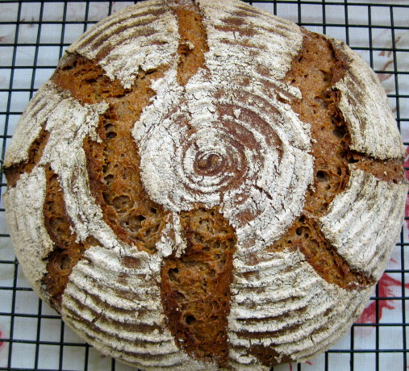

| SOAKER | |
| 192g | whole rye flour |
| 64g | whole wheat flour |
| 4g | salt |
| 192g | water |
| STARTER | |
| 195g | whole wheat mother starter (75%) (don't use this high amount of rye starter instead, otherwise the pleasantly tangy bread will be too sour!) |
| 200g | bread flour |
| 120g | water, lukewarm |
| FINAL DOUGH | |
| all soaker and starter | |
| 56g | bread flour |
| 10g | salt |
| 1g | bread spice mix (anise, caraway, fennel, coriander) |
DAY 1
Evening: In 2 separate bowls, mix together soaker and starter ingredients. Cover, and let sit at room temperature overnight.
DAY 2
Morning: Mix together all ingredients for final dough, 1 - 2 min. at low speed (or by hand), until all flour is hydrated and coarse ball forms. Knead 4 min. at medium-low speed. The dough should feel rather tacky. Let rest for 5 min., then knead 1 more min. at medium-low speed. Place dough in lightly oiled container, cover, and let rise at room temperature, approximately 4 - 5 hours, or until it has grown to about 1 1/2 times its original size.
Shape dough into boule, and proof in banneton, seam side up (or down, depending on the pattern you want - the bread on the photo was proofed seam side down, no scoring necessary), at room temperature for ca. 2 - 3 1/2 hrs., or until bread has risen to about 1 1/2 times its original size. (Preheat oven after ca. 2 1/2 hrs.)
Preheat oven to 500 F/260 C, with steam pan and baking stone. Score bread. Bake for 10 minutes at 475 F/246 C, steaming with a cup of boiling water, then lower oven temperature to 425 F/218 C. After 10 more minutes, rotate bread 180 degrees, remove steam pan, and continue baking for another 20 minutes (internal temperature at least 200 F/93 C).
Let bread cool on wire rack
Notes:
BREAD SPICES: put equal amounts of anise, caraway, fennel in a spice mill. (I like to do the spelt variation with coriander only, therefore it is in a separate mill).
VARIATIONS:
Feinbrot with spelt:
Replace rye and whole wheat flour in soaker with 256 g spelt flour, use only coriander instead of spice mix.
Feinbrot with oat: Replace rye in soaker with oat flour.